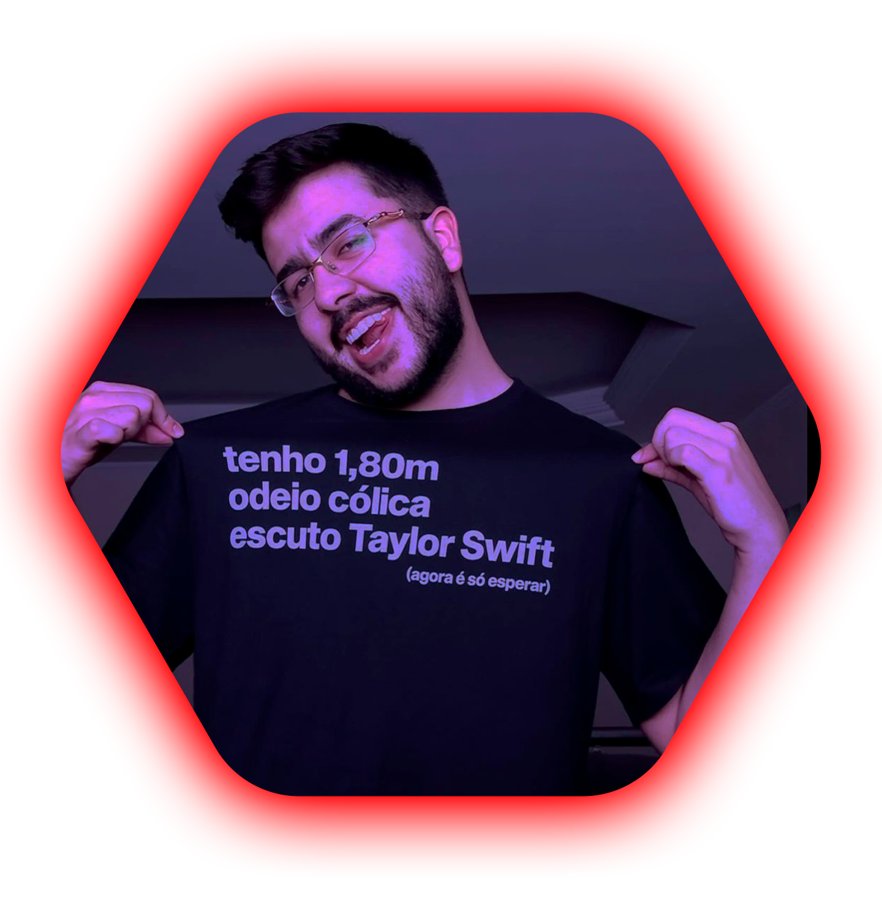
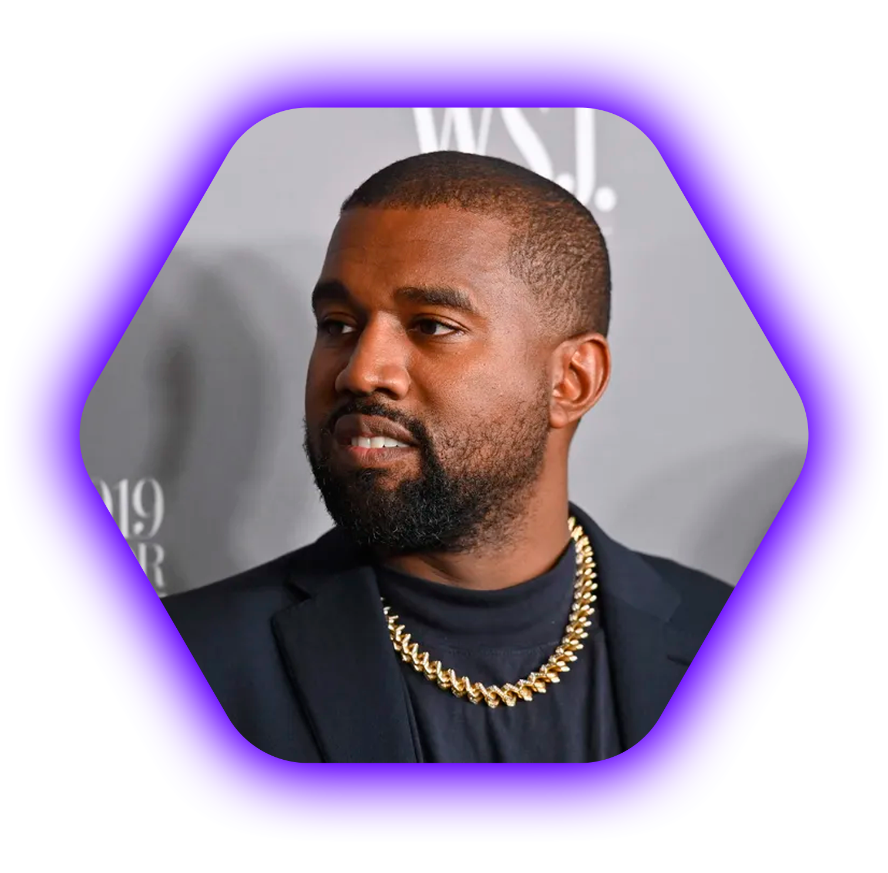

AGRADECIMENTOS ESPECIAIS PARA:
CHICO MOEDAS
"Ontem eu era o amor da sua vida, hoje eu sou o..."
Gostaríamos de agradecer ao Casemiro por relevar esta lenda


Iguinho from the Job
Obrigado ao iguinho pelos seus ensinamentos
e por ser um ótimo comediante
Silvano Sales
Agradecemos ao Silvano Sales, o cantor apaixonado por produzir músicas tão perfeitas e poéticas. "Tá afim de um romance, compra um livro. Se quer felicidade vem viver de novo..."

Kanye West
Obrigado ao Kanye West, que além de ter sido o melhor ex da Taylor Swift,
também é o maior rapper vivo.“Todo mundo queria saber o que eu faria se não ganhasse o Grammy… Acho que nunca saberemos”